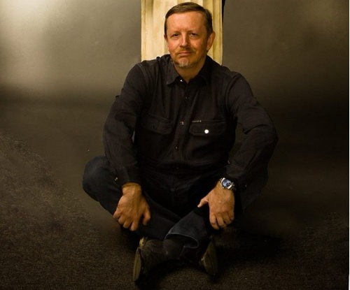

История псевдонима
Генри Лайон ОЛДИ — коллективный псевдоним писателей-харьковчан Дмитрия Евгеньевича ГРОМОВА и Олега Семёновича ЛАДЫЖЕHСКОГО. Возник он в 1991 г. «В своё время, — делятся воспоминаниями соавторы, — когда мы только начинали писать вместе, мы подумали, что две наши фамилии рядом будут плохо запоминаться читателем, а потому хорошо бы взять какой-нибудь короткий и звучный псевдоним, один на двоих. Так родился ОЛДИ — анаграмма наших имён: (ОЛ)ег + (ДИ)ма. Однако наш первый издатель потребовал добавить к „фамилии“ инициалы, и мы, недолго думая, взяли первые буквы своих фамилий: (Г)ромов и (Л)адыженский. Так появился Г. Л. Олди. Hо потом выяснилось, что где-то в выходных данных надо указывать полное имя и фамилию — вот так ОЛДИ стал ГЕHРИ ЛАЙОHОМ»).
Будущие соавторы познакомились в студии «Пеликан», где Олег Ладыженский был постановщиком. После недолгого общения у Дмитрия Громова возникла идея писать вместе. Так и возник творческий дуэт, названный Генри Лайон Олди, псевдоним, составленный из имён и фамилий авторов. Получившийся стиль долгое время не поддавался классификации, но потом и для него нашли определение — центон. (Центон — досл. — «одежда, сшитая из лоскутьев», произведение, собранное из фрагментов другого, обычно классического текста, с множеством подтекстов и отступлений.(римск)). По литературному мастерству романы Дмитрия Громова и Олега Ладыженского приравниваются многими к творениям таких признанных авторов, как М. Муркок и Р. Желязны.
Дмитрий Евгеньевич Громов
Дмитрий Евгеньевич Громов родился 30 марта 1963 года в Симферополе. В пять лет родители увозят его в Севастополь, а в 1974 переезжают в Харьков. Закончив в 80-ом школу, Дмитрий поступил в харьковский политехнический институт и окончил его с отличием. В 1986 поступил на работу в ХНПО «Карбонат» по своей специальности инженера-химика. Через пару лет поступил в аспирантуру того-же харьковского политехнического на базе общей и неорганической химии, но по окончании, диссертацию защищать не стал, так как к 1991 году был целиком занят литературной деятельностью. Любит Хард-Рок, имеет коричневый пояс по каратэ, женат с 1989 года, есть сын 1989 года рождения.
Олег Семёнович Ладыженский
Олег Семёнович Ладыженский родился 23 марта 1963 года в Харькове. После школы учился в харьковском Институте Культуры, который и окончил в 1984 с отличием. Сразу после окончания института работал режиссёром в театре «Пеликан». За время работы Ладыженский поставил около 10 спектаклей, в том числе по мотивам повестей Стругацких «Трудно быть богом» и « Жиды города Питера», за что и был награждён в 1987 званием лауреата II Всесоюзного фестиваля театральных коллективов. Имеет чёрный пояс по контактному карате-до, первый дан и статус судьи международной категории. С 1992 года — вице-председатель Общества любителей боевых искусств, старший инструктор школы Годзю-рю. Женился в 84-ом, есть дочка. Любит джаз.
Мои любимые книги:
Герой должен быть один
Миф о подвигах Геракла известен всем с малолетства. Но не все знают, что на юном Геракле пересеклись интересы Олимпийской Семьи, свергнутых, в Тартар титанов, а также многих людей - в результате чего будущий герой и его брат Ификл с детства стали заложниками чужих интриг. И уж конечно, никто не слышал о зловещих приступах безумия, которым подвержен Великий Геракл, об алтарях Одержимых Тартаром, на которых дымится кровь человеческих жертв, и о смертельно опасной тайне, которую земной отец Геракла - Амфитрион, внук Персея - вынужден хранить до самой смерти и даже после нее...
Путь меча
Под воздействием «железной» воли живых клинков искусство фехтования и изготовления холодного оружия отточено людьми до немыслимого совершенства. Все вооружены, и все мастерски владеют своими мечами — это ли не залог бескровности многочисленных поединков? И все же покой мира, кажущегося гармоничным, нарушается чередой загадочных убийств. И люди, и оружие в шоке — такого не было уже восемь веков!
Ойкумена
Ойкумена — в смысле, «обитаемое пространство». Действие разворачивается на разных планетах, на звездолётах и в открытом космосе. Главный герой — Лючано Борготта по прозвищу Тарталья, директор театра контактной имперсонации, профессионал-невропаст, человек со сложной биографией и извилистым будущим.
Мне снился сон. Я был мечом. В металл холодный заточён, Я этому не удивлялся. Как будто был здесь ни при чём.
Мне снился сон. Я был мечом. Взлетая над чужим плечом, Я равнодушно опускался. Я был на это обречён.
Мне снился сон. Я был мечом. Людей судьёй и палачом. В короткой жизни человека Я был последнею свечой. В сплетенье помыслов и судеб Незыблем оставался я. Как то, что было, есть и будет, Как столп опорный бытия.
Абу-т-Тайиб Аль-Мутанабби, Г.Л. Олди, "Путь Меча"
После массштабного вторжения россии в Украину, Г.Л.Олди занялись переводом своих книг на украинский язык. Новые будут выпускать на украинском.